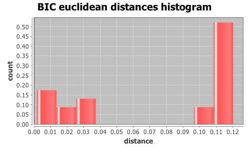
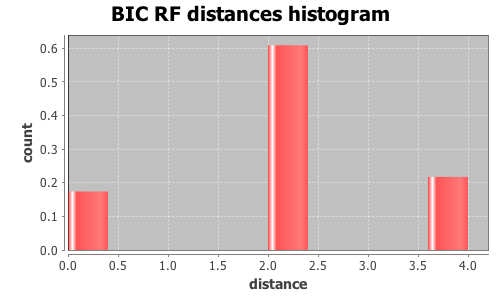

Application Meta
jModeltest 2.1
(c) 2011-onwards D. Darriba, G.L. Taboada, R. Doallo and D. Posada,(1) Department of Biochemistry, Genetics and Immunology
University of Vigo, 36310 Vigo, Spain.
(2) Department of Electronics and Systems
University of A Coruna, 15071 A Coruna, Spain.
e-mail: ddarriba@udc.es, dposada@uvigo.es
Wed Aug 26 16:14:19 EDT 2015
Mac OS X 10.10.5, arch: x86_64, bits: 64, numcores: 4
| Citation: | Darriba D, Taboada GL, Doallo R and Posada D. 2012. "jModelTest 2: more models, new heuristics and parallel computing". Nature Methods 9, 772. |
 Back to top
Back to top Settings
Arguments = -d group3/group3.txt.gene_238.phy -s 3 -i -g 4 -f -BIC -tr 7 -o group3out/g3outgene_238.txtInput Alignment: "group3/group3.txt.gene_238.phy"
NumTaxa = 17
Length = 1,286
Phyml version = 3.0
Phyml binary = PhyML_3.0_macOS_i386
Candidate models = 24
number of substitution schemes = 3
including models with equal/unequal base frequencies (+F)
including models with/without a proportion of invariable sites (+I)
including models with/without rate variation among sites (+G) (nCat = 4)
Optimized free parameters (K) = Substitution parameters + 31 branch lengths + topology
Base tree for likelihood calculations = Maximum Likelihood
Tree topology search operation = NNI
Model Optimization Results
| ID | Name | Partition | -lnL | p | fA | fC | fG | fT | ti/tv | R(a) | R(b) | R(c) | R(d) | R(e) | R(f) | p-inv | shape |
|---|---|---|---|---|---|---|---|---|---|---|---|---|---|---|---|---|---|
| 1 | JC | 000000 | 3943.2663 | 32 | - | - | - | - | - | - | - | - | - | - | - | - | - |
| 2 | JC+I | 000000 | 3863.9177 | 33 | - | - | - | - | - | - | - | - | - | - | - | 0.7050 | - |
| 3 | JC+G | 000000 | 3861.0121 | 33 | - | - | - | - | - | - | - | - | - | - | - | - | 0.1860 |
| 4 | JC+I+G | 000000 | 3857.2177 | 34 | - | - | - | - | - | - | - | - | - | - | - | 0.5040 | 0.7880 |
| 5 | F81 | 000000 | 3851.1816 | 35 | 0.1513 | 0.3658 | 0.2898 | 0.1931 | - | - | - | - | - | - | - | - | - |
| 6 | F81+I | 000000 | 3770.1292 | 36 | 0.1506 | 0.3684 | 0.2891 | 0.1919 | - | - | - | - | - | - | - | 0.7060 | - |
| 7 | F81+G | 000000 | 3767.3347 | 36 | 0.1506 | 0.3683 | 0.2892 | 0.1920 | - | - | - | - | - | - | - | - | 0.1820 |
| 8 | F81+I+G | 000000 | 3763.0554 | 37 | 0.1500 | 0.3688 | 0.2895 | 0.1917 | - | - | - | - | - | - | - | 0.5070 | 0.7700 |
| 9 | K80 | 010010 | 3915.6645 | 33 | - | - | - | - | 1.1263 | - | - | - | - | - | - | - | - |
| 10 | K80+I | 010010 | 3831.7696 | 34 | - | - | - | - | 1.2167 | - | - | - | - | - | - | 0.7080 | - |
| 11 | K80+G | 010010 | 3832.3399 | 34 | - | - | - | - | 1.1857 | - | - | - | - | - | - | - | 0.1840 |
| 12 | K80+I+G | 010010 | 3828.2122 | 35 | - | - | - | - | 1.1983 | - | - | - | - | - | - | 0.4960 | 0.7410 |
| 13 | HKY | 010010 | 3819.6185 | 36 | 0.1508 | 0.3656 | 0.2952 | 0.1885 | 1.0976 | - | - | - | - | - | - | - | - |
| 14 | HKY+I | 010010 | 3736.2778 | 37 | 0.1495 | 0.3697 | 0.2955 | 0.1854 | 1.1871 | - | - | - | - | - | - | 0.7080 | - |
| 15 | HKY+G | 010010 | 3733.1220 | 37 | 0.1489 | 0.3699 | 0.2960 | 0.1852 | 1.1893 | - | - | - | - | - | - | - | 0.1790 |
| 16 | HKY+I+G | 010010 | 3728.5294 | 38 | 0.1489 | 0.3701 | 0.2960 | 0.1850 | 1.2071 | - | - | - | - | - | - | 0.5180 | 0.7800 |
| 17 | SYM | 012345 | 3859.5507 | 37 | - | - | - | - | - | 2.0967 | 4.7441 | 0.0469 | 4.7937 | 5.4334 | 1.0000 | - | - |
| 18 | SYM+I | 012345 | 3769.5839 | 38 | - | - | - | - | - | 2.7042 | 6.4184 | 0.0019 | 7.2164 | 7.7382 | 1.0000 | 0.7080 | - |
| 19 | SYM+G | 012345 | 3766.4435 | 38 | - | - | - | - | - | 2.7696 | 6.4770 | 0.0019 | 7.4034 | 7.8806 | 1.0000 | - | 0.1760 |
| 20 | SYM+I+G | 012345 | 3762.0162 | 39 | - | - | - | - | - | 2.9016 | 6.8370 | 0.0019 | 8.0189 | 8.3957 | 1.0000 | 0.5090 | 0.7200 |
| 21 | GTR | 012345 | 3786.9144 | 40 | 0.1554 | 0.3542 | 0.2880 | 0.2024 | - | 2.2568 | 5.4371 | 0.0682 | 3.4837 | 4.8812 | 1.0000 | - | - |
| 22 | GTR+I | 012345 | 3702.1064 | 41 | 0.1568 | 0.3526 | 0.2864 | 0.2042 | - | 2.8147 | 7.4308 | 0.0014 | 4.8350 | 6.7064 | 1.0000 | 0.7100 | - |
| 23 | GTR+G | 012345 | 3701.0117 | 41 | 0.1556 | 0.3545 | 0.2878 | 0.2021 | - | 2.5958 | 6.6252 | 0.0012 | 4.3759 | 6.0382 | 1.0000 | - | 0.1790 |
| 24 | GTR+I+G | 012345 | 3696.2653 | 42 | 0.1558 | 0.3540 | 0.2876 | 0.2026 | - | 2.6689 | 6.9093 | 0.0001 | 4.5985 | 6.2623 | 1.0000 | 0.5040 | 0.7270 |
There are 3 different topologies. The following table shows the models supporting each topology and the rank according to each Information Criterion, as well as Robinson-Foulds and Euclidean distances with the tree of the best-fit model.
| ID | Models | Topology | AIC | BIC | AICc | DT | |
|---|---|---|---|---|---|---|---|
| 0 |
F81+I+G HKY+G HKY+I+G GTR+G GTR+I+G
|
RANK | - | 0 | - | - | |
| Weight | - | 0.9264 | - | - | |||
| RF | - | 0 | - | - | |||
| AVG Distance | - | 3.5683e-03 | - | - | |||
| Distance VAR | - | 5.8909e-06 | - | - | |||
| 1 |
JC JC+I JC+G JC+I+G F81 F81+I F81+G K80 K80+G K80+I+G HKY HKY+I SYM GTR
|
RANK | - | 1 | - | - | |
| Weight | - | 0.0000 | - | - | |||
| RF | - | 2 | - | - | |||
| AVG Distance | - | 1.1360e-01 | - | - | |||
| Distance VAR | - | 2.3573e-05 | - | - | |||
| 2 |
K80+I SYM+I SYM+G SYM+I+G GTR+I
|
RANK | - | 2 | - | - | |
| Weight | - | 0.0736 | - | - | |||
| RF | - | 4 | - | - | |||
| AVG Distance | - | 2.5554e-02 | - | - | |||
| Distance VAR | - | 9.3855e-07 | - | - |
BIC Selection Results
Model selected
| Model | GTR+I+G | ||
|---|---|---|---|
| partition | 012345 | ||
| -lnL | 3696.2653 | ||
| K | 42 | ||
| freqA | 0.1558 | R(a) | 2.6689 |
| freqC | 0.3540 | R(b) | 6.9093 |
| freqG | 0.2876 | R(c) | 0.0001 |
| freqT | 0.2026 | R(d) | 4.5985 |
| ti/tv | - | R(e) | 6.2623 |
| R(f) | 1.0000 | ||
| p-inv | 0.5040 | gamma | 0.7270 |
Best model tree
((((((((I0135:0.00403041,I0127:0.00568919):0.01491952,(I0068:0.00080484,I0067:0.00488710):0.00113259):0.00238114,I0141:0.00458908):0.00595167,(I0076:0.00683788,(I0075:0.00608571,I0119:0.08813522):0.01093489):0.00954745):0.00764196,((((I0152:0.00726995,I0150:0.00078978):0.00080092,I0149:0.00079719):0.00481950,I0151:0.00241598):0.00000006,I0144:0.01404951):0.00249396):0.00088548,I0148:0.00562066):0.00465081,I0147:0.01635065):0.01446179,I0111:0.05538013,I0158:0.01623301);
Display best model tree in PhyloWidget
| Model | -lnL | K | BIC | delta | weight | cumWeight |
|---|---|---|---|---|---|---|
| GTR+I+G | 3696.2653 | 42 | 7693.2209 | 0.0000 | 0.7064 | 0.7064 |
| GTR+G | 3701.0117 | 41 | 7695.5544 | 2.3335 | 0.2200 | 0.9264 |
| GTR+I | 3702.1064 | 41 | 7697.7438 | 4.5228 | 0.0736 | 1.0000 |
| HKY+I+G | 3728.5294 | 38 | 7729.1119 | 35.8910 | 0.0000 | 1.0000 |
| HKY+G | 3733.1220 | 37 | 7731.1378 | 37.9169 | 0.0000 | 1.0000 |
| HKY+I | 3736.2778 | 37 | 7737.4493 | 44.2284 | 0.0000 | 1.0000 |
| F81+I+G | 3763.0554 | 37 | 7791.0046 | 97.7836 | 0.0000 | 1.0000 |
| F81+G | 3767.3347 | 36 | 7792.4039 | 99.1829 | 0.0000 | 1.0000 |
| F81+I | 3770.1292 | 36 | 7797.9929 | 104.7720 | 0.0000 | 1.0000 |
| SYM+I+G | 3762.0162 | 39 | 7803.2447 | 110.0237 | 0.0000 | 1.0000 |
| SYM+G | 3766.4435 | 38 | 7804.9401 | 111.7192 | 0.0000 | 1.0000 |
| SYM+I | 3769.5839 | 38 | 7811.2209 | 117.9999 | 0.0000 | 1.0000 |
| GTR | 3786.9144 | 40 | 7860.2006 | 166.9796 | 0.0000 | 1.0000 |
| HKY | 3819.6185 | 36 | 7896.9714 | 203.7505 | 0.0000 | 1.0000 |
| K80+I | 3831.7696 | 34 | 7906.9551 | 213.7342 | 0.0000 | 1.0000 |
| K80+I+G | 3828.2122 | 35 | 7906.9997 | 213.7788 | 0.0000 | 1.0000 |
| K80+G | 3832.3399 | 34 | 7908.0956 | 214.8747 | 0.0000 | 1.0000 |
| F81 | 3851.1816 | 35 | 7952.9385 | 259.7176 | 0.0000 | 1.0000 |
| JC+I+G | 3857.2177 | 34 | 7957.8513 | 264.6303 | 0.0000 | 1.0000 |
| JC+G | 3861.0121 | 33 | 7958.2809 | 265.0600 | 0.0000 | 1.0000 |
| JC+I | 3863.9177 | 33 | 7964.0921 | 270.8712 | 0.0000 | 1.0000 |
| SYM | 3859.5507 | 37 | 7983.9952 | 290.7743 | 0.0000 | 1.0000 |
| K80 | 3915.6645 | 33 | 8067.5857 | 374.3648 | 0.0000 | 1.0000 |
| JC | 3943.2663 | 32 | 8115.6300 | 422.4091 | 0.0000 | 1.0000 |
| -lnL: | negative log likelihod |
| K: | number of estimated parameters |
| BIC: | Bayesian Information Criterion |
| delta: | BIC difference |
| weight: | BIC weight |
| cumWeight: | cumulative BIC weight |
Confidence interval
There are 24 models in the 100.00% confidence interval:
GTR+I+G GTR+G GTR+I HKY+I+G HKY+G HKY+I F81+I+G F81+G F81+I SYM+I+G SYM+G SYM+I GTR HKY K80+I K80+I+G K80+G F81 JC+I+G JC+G JC+I SYM K80 JC

Euclidean distances histogram from each model optimized tree to GTR+I+G tree.
Euclidean distances histogram from each model optimized tree to GTR+I+G tree.

Robinson-Foulds distances histogram from the different topologies to GTR+I+G topology.
Robinson-Foulds distances histogram from the different topologies to GTR+I+G topology.